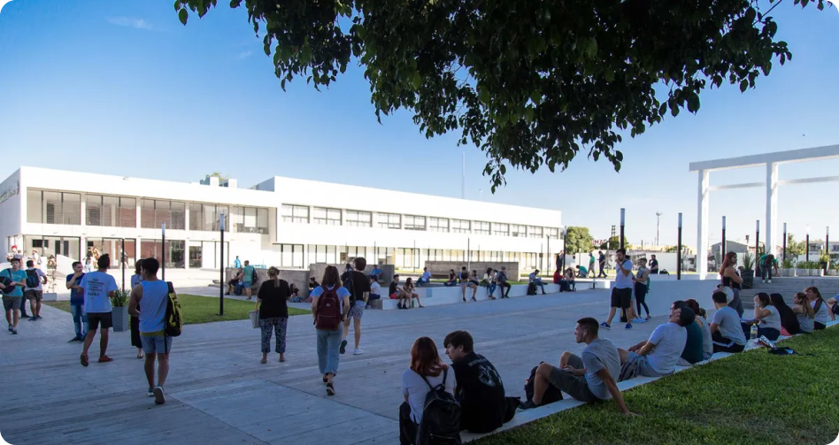

Universidad Nacional de Hurlingham (UNAHUR)
Inaugurada en 2015, busca democratizar el acceso a la educación superior en Hurlingham y alrededores. Su lema es ofrecer calidad educativa cercana a la comunidad.
Carreras:
La UNAHUR tiene enfoque está en brindar carreras accesibles y relevantes para el desarrollo de la comunidad local, con énfasis en ciencias aplicadas y educación:
Ciencias de la Salud:
- Licenciatura en Kinesiología y Fisiatría
- Licenciatura en Enfermería
- Tecnicatura Universitaria en Instrumentación Quirúrgica
Ingeniería y Tecnología:
- Ingeniería Eléctrica
- Tecnicatura Universitaria en Energía Eléctrica
- Tecnicatura Universitaria en Informática
Educación:
- Profesorado Universitario de Educación Primaria
- Profesorado Universitario de Educación Inicial
Ciencia y Tecnología de Alimentos:
- Tecnicatura Universitaria en Laboratorio
Modalidades Disponibles y Datos de Contacto
Modalidades de Estudio:
- Presencial, con opciones virtuales en posgrados y educación continua.
Contacto:
- Página web: www.unahur.edu.ar
- Dirección: Av. Vergara 2222, Villa Tesei, Buenos Aires
- Teléfono: (011) 4450-0900